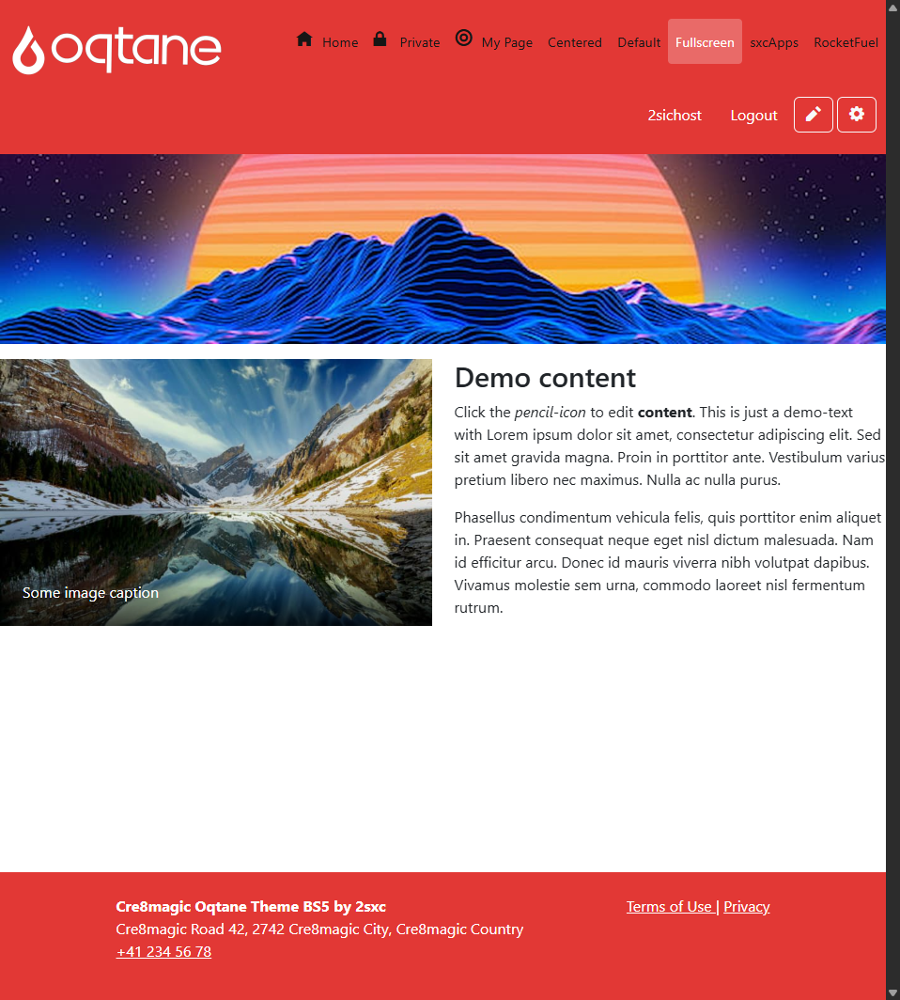
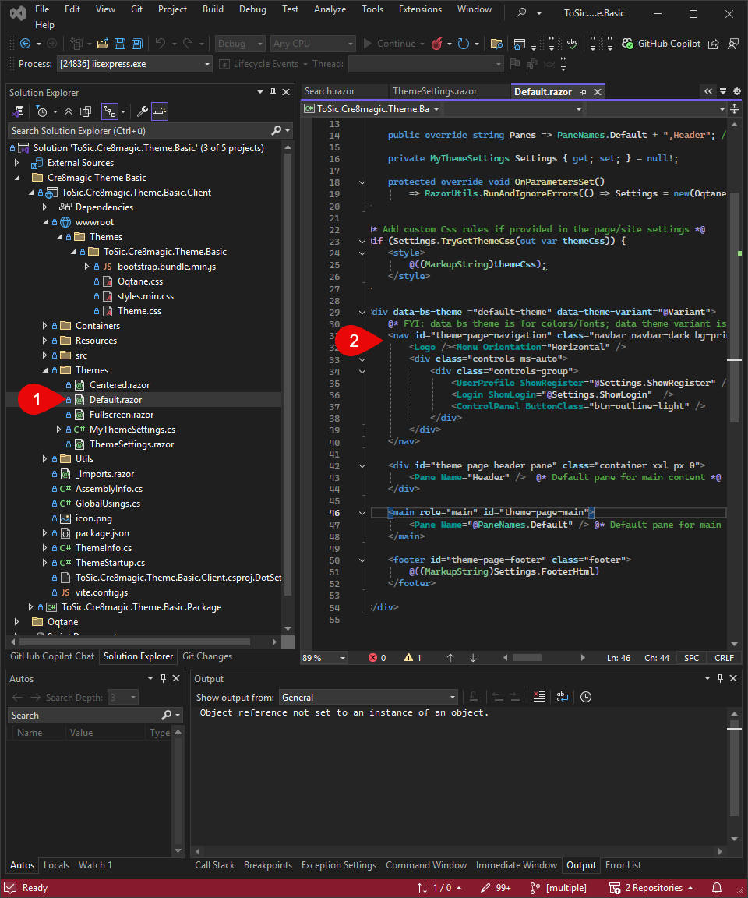
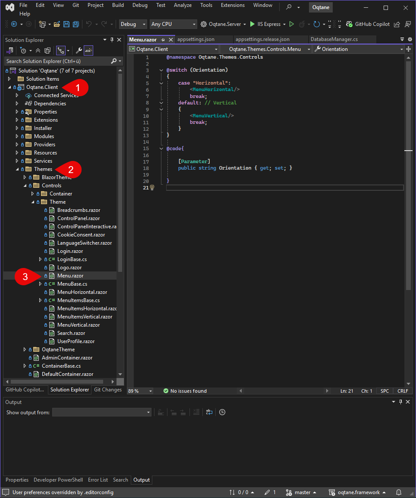

What is Navigation
Navigation refers to the main bar at the top area (header) of an Oqtane page. It allows users to navigate between different subpages.
The navigation typically includes links to the homepage and various defined pages, login/logout, and – if a user is logged in – buttons like "Edit Page" or "Admin Dashboard".
What can the navigation look like
For that, I'll show you the default and a custom one so you understand what I mean by navigation and how to customize it.
Default Example in the Cre8magic Theme
The theme shows how a simple and functional navigation can look, e.g., as a horizontal bar with links.

Custom
The navigation can be customized in many ways. For example:
- Placing the logo differently
- Adding a search bar in the header
- Making it mobile-friendly (responsive), e.g., with a burger menu
Where is the navigation defined in the code
The navigation is defined in the theme, typically in the following file:

